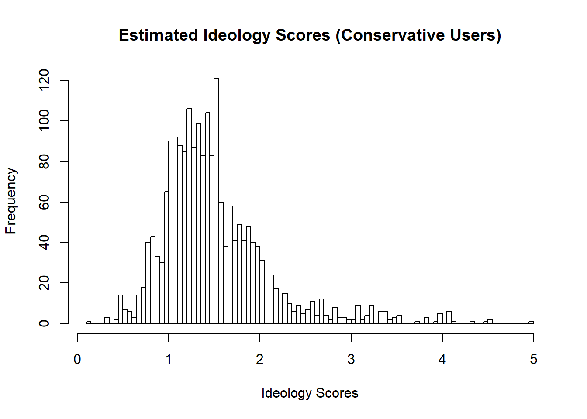

Chapter 8 Twitter Example
The following is part of my course project for Stat 536. It aims to replicate part of the findings from Barbera (2015) Birds of the Same Feather Tweet Together: Bayesian Ideal Point Estimation Using Twitter Data. Political Analysis 23 (1). Note that, the following model is much simpler than that in the original paper.
8.1 Model
Suppose that a Twitter user is presented with a choice between following or not following another target \(j \in \{ 1, ..., m\}\). Let \(y_{j}=1\) if the user decides to follow \(j\), and \(y_{j}=0\) otherwise.
\[y_{j}=\begin{cases} 1 & Following \\ 0 & Not Following \end{cases}\]
\[p(y_{j}=1|\theta) = \frac{exp(- \theta_0|\theta_1 - x_j|^2)}{1+exp(- \theta_0|\theta_1 - x_j|^2)}\] We additionally know the priors of \(\theta\).
\[\theta_i \sim N(0,10^2) (i = 0, 1)\]
The likelihood function is as follows.
\[L(Y|\theta)=\prod_{j=1}^{m} (\frac{exp(- \theta_0|\theta_1 - x_j|^2)}{1+exp(- \theta_0|\theta_1 - x_j|^2)})^{y_j}(1-\frac{exp(- \theta_0|\theta_1 - x_j|^2)}{1+exp(- \theta_0|\theta_1 - x_j|^2)})^{(1-y_j)}\] Thus, the posterior is as follows.
\[L(Y|\theta) \cdot N(\theta_0|0,10) \cdot N(\theta_1|0,10)\] \[\propto \prod_{j=1}^{m} (\frac{exp(- \theta_0|\theta_1 - x_j|^2)}{1+exp(- \theta_0|\theta_1 - x_j|^2)})^{y_j}(1-\frac{exp(- \theta_0|\theta_1 - x_j|^2)}{1+exp(- \theta_0|\theta_1 - x_j|^2)})^{(1-y_j)}\cdot exp(-\frac{1}{2}(\frac{\theta_0}{10})^2)\cdot exp(-\frac{1}{2}(\frac{\theta_1}{10})^2)\]
#Establish the function for logistic regression
Expit<-function(x){exp(x)/(1+exp(x))}
#Construct the posterior - in a log-format
#To make sure that the estimate of theta_1 is stable,
#the following code wants to make sure that theta_0 is always greater than zero.
log_post<-function(Y, X, theta)
{
if(theta[1]<=0){post=-Inf}
if(theta[1]>0){
prob1<-Expit(-theta[1]*((theta[2]-X)^2))
likelihood<-sum(dbinom(Y,1,prob1,log = TRUE))
priors<-sum(dnorm(theta,0,10,log=TRUE))
post=likelihood+priors}
return(post)
}
Bayes_logit<-function (Y,X,n_samples=2000)
{
#Initial values
theta<-c(5,5)
#store data
keep.theta<-matrix(0,n_samples,2)
keep.theta[1,]<-theta
#acceptance and rejection
acc<-att<-rep(0,2)
#current log posterior
current_lp<-log_post(Y,X,theta)
for (i in 2:n_samples)
{
for(j in 1:2)
{
#attempt + 1
att[j]<-att[j]+1
can_theta<-theta
can_theta[j]<-rnorm(1,theta[j],0.5)
#candidate of log posterior
candidate_lp<-log_post(Y,X,can_theta)
Rho<-min(exp(candidate_lp-current_lp),1)
Random_probability<-runif(1)
if (Random_probability<Rho)
{
theta<-can_theta
current_lp<-candidate_lp
#acceptance + 1, as long as Random_probability<Rho
acc[j]<-acc[j]+1
}
}
#save theta
keep.theta[i,]<-theta
}
#Return: including theta and acceptance rate
list(theta=keep.theta,acceptance_rate=acc/att)
}8.2 Simulating Data of Senators on Twitter
Assume that we have 100 senators, 50 Democrats and 50 Republicans, who we know their ideology. Assume that Democrats have negative ideology scores to indicate that they are more liberal, whereas Republicans have positive scores to indicate that they are more conservative. The following is data simulation for senators.
# Republicans are more conservative, and they have positive numbers.
Republicans<-c()
Republicans<-rnorm(50,1,0.5)
No_Republicans<-rep(1:50,1)
Part_1<-cbind(No_Republicans,Republicans)
# Democrats are more liberal, and they have negative numbers.
Democrats<-c()
Democrats<-rnorm(50,-1,0.5)
No_Democrats<-rep(51:100,1)
Part_2<-cbind(No_Democrats,Democrats)
Data_Elites<-rbind(Part_1,Part_2)
Data_Elites<-as.data.frame(Data_Elites)
colnames(Data_Elites) <- c("Elite_No","Elite_ideology")
head(Data_Elites)## Elite_No Elite_ideology
## 1 1 1.0541992
## 2 2 0.3805544
## 3 3 1.3568577
## 4 4 0.9922547
## 5 5 1.0089966
## 6 6 0.88782718.3 Simulating Data of Conservative Users on Twitter and Model Testing
Assume that we observe one Twitter user, who is more conservative. To simulate Twitter following data for this user, I assign this user to follow more Republican senators. Thus, if the Metropolis Hastings algorithm works as intended, we would expect to see a positive estimated value for their ideology. Importantly, as we can see in the histogram below, the estimated value indeed is positive, providing preliminary evidence for the statistical model and the algorithm. In addition, for the acceptance rate, we can see that the constant has a lower number than ideology, since we only accept a constant when it is positive.
#This user approximately follows 45 Republican Senators and 10 Democrat Senators.
Data_user<-as.data.frame(matrix(c(ifelse(runif(50)<.1,0,1),ifelse(runif(50)<.8,0,1))), 100, 1)
colnames(Data_user)<-c("R_User")
Data_combined<-cbind(Data_Elites,Data_user)
X_data<-Data_combined$Elite_ideology
Y_data<-Data_combined$R_User
fit_C<-Bayes_logit(Y_data,X_data)
fit_C$acceptance_rate## [1] 0.1320660 0.5557779plot(fit_C$theta[,1],main="Constant (Conservative Users)",
xlab="Iteration Process",ylab="Estimated Scores",type="l")plot(fit_C$theta[,2],main="Estimated Ideology Scores (Conservative Users)",
xlab="Iteration Process",ylab="Ideology Scores",type="l")
hist(fit_C$theta[,2],main="Estimated Ideology Scores (Conservative Users)",
xlab="Ideology Scores",breaks = 100)
8.4 Simulating Data of Liberal Users on Twitter and Model Testing
To further verify the Metropolis Hastings algorithm, I plan to test the opposite estimate. Specifically, assume that we observe another user, who is more liberal. To simulate Twitter following data for this user, I assign this user to follow more Democrat senators. In this case, we would expect to see a negative value for their estimated ideology. As we can see in the histogram shown below, as expected, the estimated value is negative, providing convergent evidence for the model and the algorithm.
#This user approximately follows 10 Republican Senators and 45 Democrat Senators.
Data_user<-as.data.frame(matrix(c(ifelse(runif(50)<.8,0,1),ifelse(runif(50)<.1,0,1))), 100, 1)
colnames(Data_user)<-c("L_User")
Data_combined<-cbind(Data_Elites,Data_user)
X_data<-Data_combined$Elite_ideology
Y_data<-Data_combined$L_User
fit_L<-Bayes_logit(Y_data,X_data)
fit_L$acceptance_rate## [1] 0.1585793 0.5092546plot(fit_L$theta[,1],main="Constant (Liberal Users)",
xlab="Iteration Process",ylab="Estimated Scores",type="l")